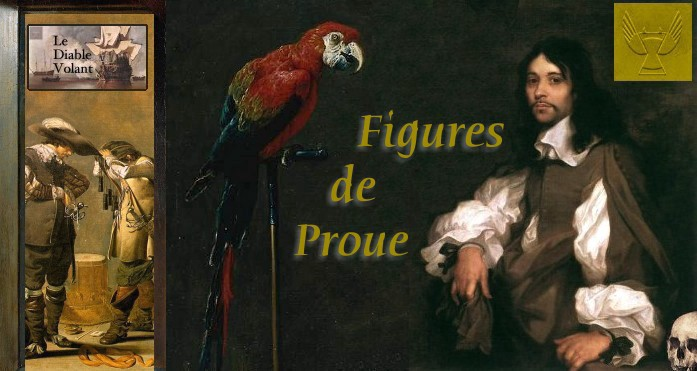

|

Un dictionnaire biographique de la flibuste (1648-1688)Figures de Proue, le dictionnaire biographique du Diable Volant, tire son origine des fiches biographiques que j'ai rédigées, pour mon usage personnel, sur les flibustiers et d'autres personnages qui leur sont liés. Actuellement il contient les biographies de presque tous les chefs flibustiers actifs durant la seconde moitié du XVIIe siècle, ainsi que celles de quelques administrateurs coloniaux, officiers de marine et autres personnages qui furent en relation avec eux. La plupart des entrées se limitent à quelques lignes. Selon la disponibilité et la richesse des informations, j'ai entrepris de rédiger des textes plus longs. Certains se trouvent déjà dans les présentes pages. Pour l'avenir, des entrées ne se rapportant, non plus à des personnages, mais à des îles, des terres, des villes et des villages qui furent fréquentées ou pillées par les flibustiers. Si vous trouvez dans ces Figures de Proue des erreurs de faits et/ou d'attribution, n'hésitez surtout pas à me le faire savoir. De plus, si vous voulez contribuer à ce dictionnaire, par exemple, en rédigeant un texte plus complet sur tel ou tel personnage, vous êtes les bienvenus. Votre humble serviteur, L'illustration ornant cette page a été conçue par votre serviteur avec la collaboration posthume d'Adriaen van Utrecht (1599-1653) pour l'ara rouge, de Sébastien Bourdon (1616-1671) pour le gentilhomme anonyme, de Jacob Duck (1600-1660) pour les deux soldats se préparant au combat, d'Antonio de Perada (1611-1678) pour le crâne, de Willem Willemsz. van De Velde (1633-1707) pour la canonnade, et de Pieter De Hooch (1629-1684) pour le cadre de la porte. Enfin, le logo du Diable Volant a été conçu par Jonathan Sylvestre (2001). |